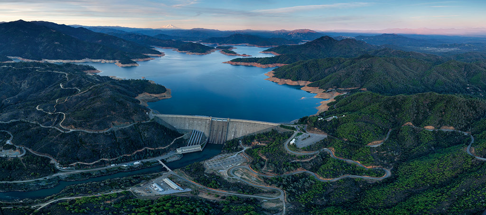
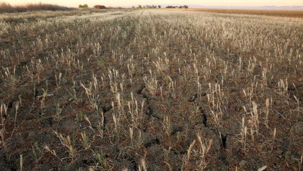
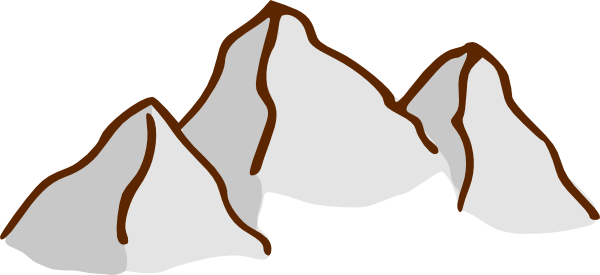

California is currently experiencing its
driest period in
163 years
of recorded rainfall history.
This drought has cost the farming industry an estimated last year.

Over the years, hundreds more water projects were implemented to support Southern California's population of 23 million as well as its thriving agricultural industry
In the early 20th century, canals bringing water from the Colorado River Basin turned it into the agricultural paradise we know today.
Presently, much of California's water comes from snowpack , especially during the dry summer months, but years of low precipitation have left reservoirs dry

The lack of surface water has led to an increased reliance on groundwater. Its extensive use, however, is leading to groundwater depletion, causing residents to turn to bottled water while farmers struggle to find more efficient irrigation methods
Some definitions
Surface water is water found on the earth's surface, in lakes, streams, rivers, etc.
Groundwater is water found beneath the surface. It collects in underground formations called aquifers and can be accessed through man made wells or naturally occurring springs.
Snowmelt is water that comes from precipitation stored in the mountains (also called snowpack ). In the summer months, snowpack melts, running into and refilling rivers and streams. In the westerns states, as much as 75% of the water supply comes from snowmelt; in California, the primary source is the Sierra Nevada range.
Did you know...
California has been the country's top agricultural state for the past 50 years.
***
California produces 99 percent of the country's artichokes, 99 percent of walnuts, 97 percent of kiwis, 97 percent of plums, 95 percent of celery, 95 percent of garlic, 89 percent of cauliflower, 71 percent of spinach, and 69 percent of carrots
***
California's agricultural industry is worth over $43.5 billion
Much of California's water is used in agriculture. Mouse over to see how much water each crop takes to grow.